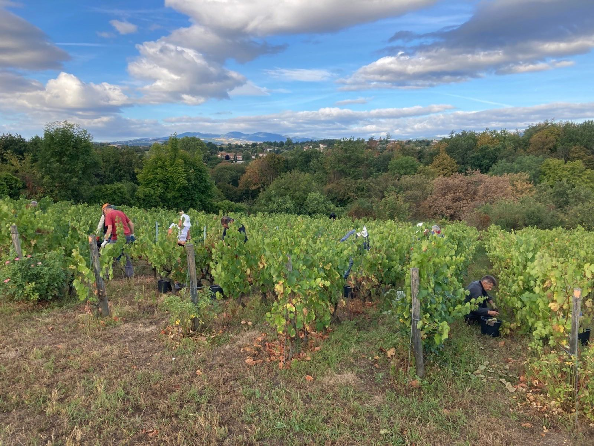
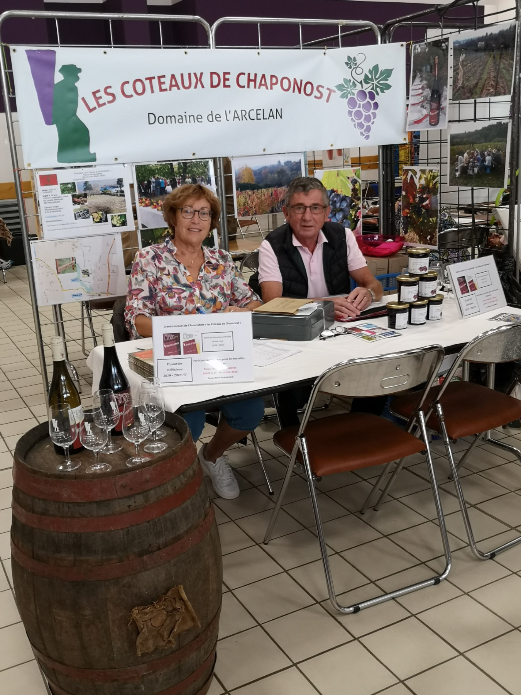
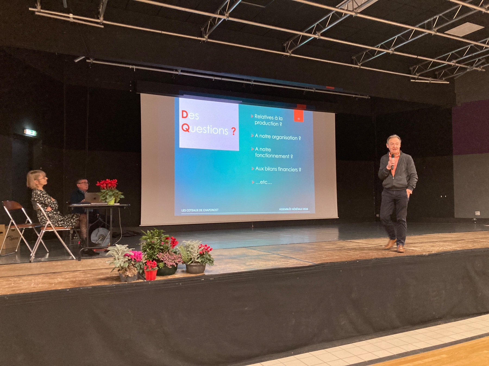
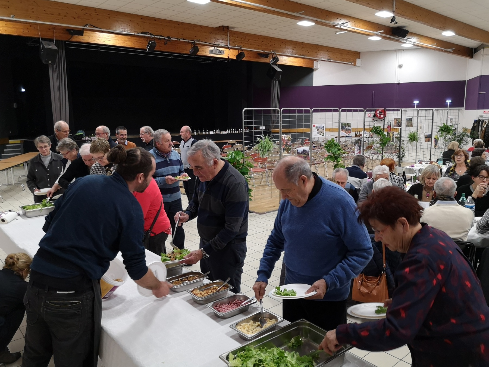
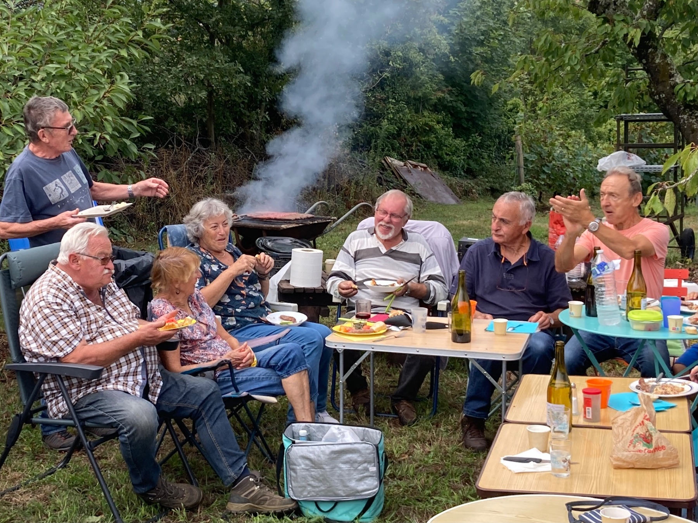
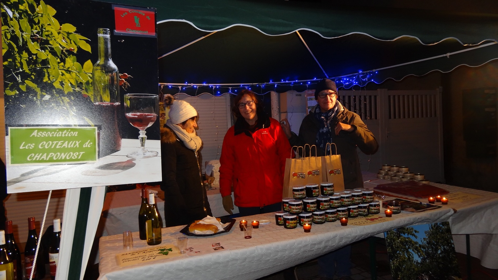

Les vendanges
Fin août ou début septembre, le point culminant de l'année, les bénévoles vendangeurs se retrouvent pour une matinée, suivie d'un repas en commun à la vigne.
Voir en photos →Nos rendez-vous
Les moments qui rassemblent les 130 adhérents.
Au fil de l'année

Fin août ou début septembre, le point culminant de l'année, les bénévoles vendangeurs se retrouvent pour une matinée, suivie d'un repas en commun à la vigne.
Voir en photos →

L'évènement qui réunit chaque année tous les adhérents de l'association chaque année en janvier.
Voir en photos →
à la suite de l'AG, l'occasion de partager un bon moment ...
Voir en photos →
